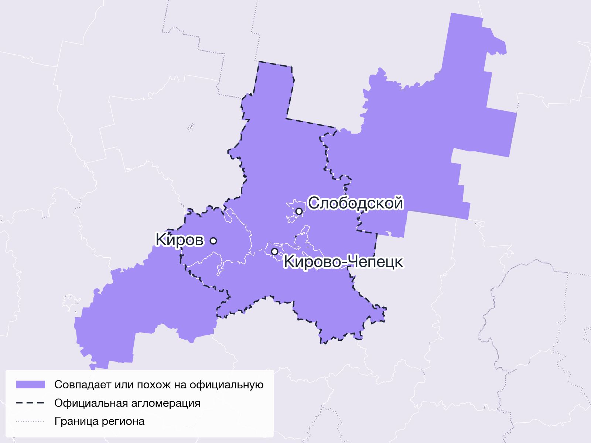

Тип 1
Совпадает или похож на официальную агломерацию
49кластеров повторяют официальную границу или уточняют ее: добавляют соседние районы либо отрезают лишние
Пример: Кировская агломерация
В официальную Кировскую агломерацию входят 5 муниципалитетов: Киров, Кирово-Чепецк, Слободской и окружающие их районы. Модель собрала все пять в один кластер и добавила еще два района — Белохолуницкий и Оричевский. Там тратят так же, как в пригородах Кирова.
Еще пример: Екатеринбургская — все 16 официальных муниципалитетов в одном кластере и еще 6 соседних.